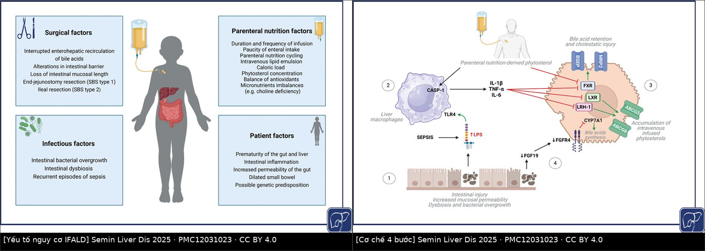
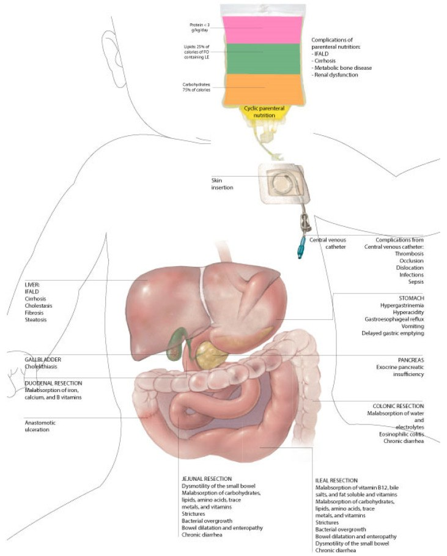
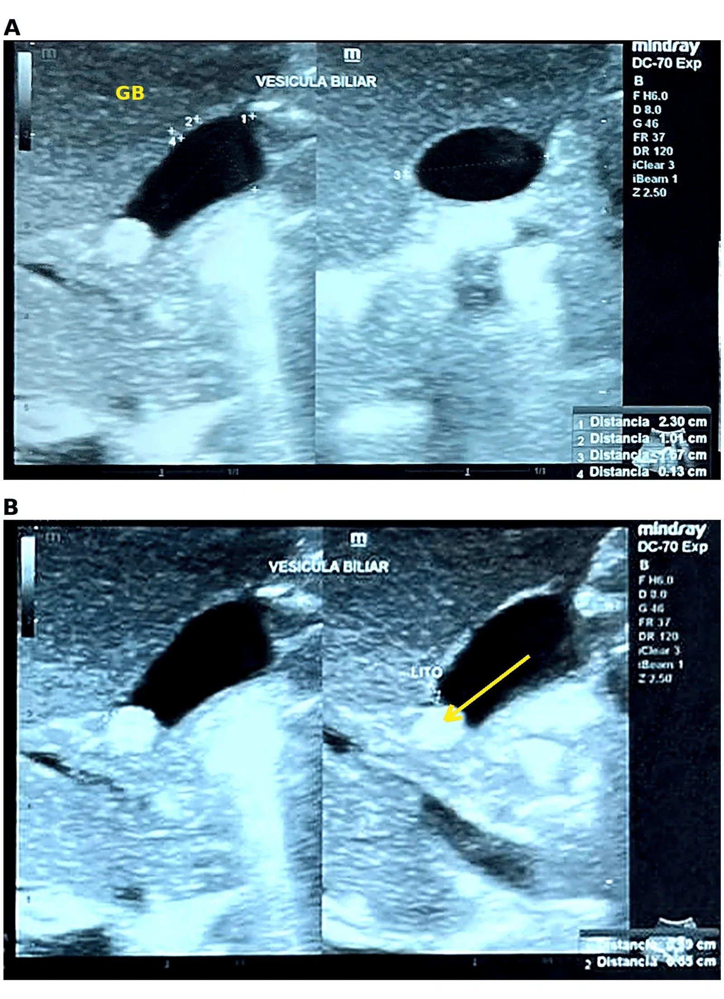
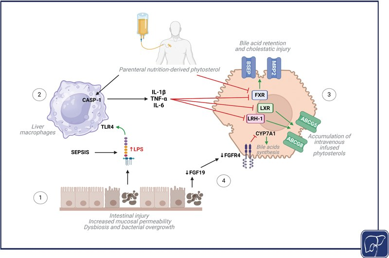

3006 — Hội chứng ruột ngắn & bệnh gan do nuôi dưỡng tĩnh mạch ở trẻ: bản đồ cắt ruột, ngưỡng bilirubin trực tiếp & khi nào đổi lipid
Tags: pattern:ruot-ngan pattern:vang-da-u-mat pattern:gan-to pattern:soi-tui-mat pattern:gian-ruot vung:ruot-non vung:gan vung:duong-mat anatomy:ruot-non score:IFALD protocol:sieu-am-bung protocol:MRI-ruot protocol:elastography incidentaloma:khong
Mức chắc chắn (certainty): tổng hợp y văn (literature synthesis) — ghép tổng quan 2023 về SBS nhi (Nutrients 2023, PMC10221592), tổng quan cơ chế – điều trị IFALD (Semin Liver Dis 2025, PMC12031023), đoàn hệ 24 trẻ Đài Loan (Biomed J 2025, PMC12332206), ca sỏi mật tồn tại sau khi hết ứ mật (Cureus 2026, PMC13696064), SWE gan ở trẻ đẻ non (Am J Perinatol 2025, PMC12234155), tổng quan bệnh đường mật nhi (World J Gastroenterol 2024, PMC10989494) và tổng quan nuôi dưỡng đường tiêu hóa ở trẻ ứ mật (Nutrients 2025, PMC12158089). Không có ca do nhóm tự chụp.
Câu hỏi thực hành: bé gái 2 tháng tuổi, sinh non 28 tuần, viêm ruột hoại tử phải cắt 35 cm ruột non + van hồi manh tràng, đang nuôi dưỡng tĩnh mạch (PN) 7 tuần, nay vàng da tăng dần, phân bạc màu, gan 3 cm dưới bờ sườn. Siêu âm không thấy túi mật to, không giãn đường mật. Câu hỏi: đứt ruột ngắn hay ứ mật do PN, hay cả hai; có bỏ sót teo đường mật không; và bước tiếp theo là gì? Bài chốt ba quyết định: (1) bilirubin trực tiếp ≥ 2 mg/dL kéo dài 2 tuần ở trẻ PN ≥ 14 ngày = IFALD cho tới khi loại trừ nguyên nhân khác; (2) siêu âm + xét nghiệm phải loại teo đường mật (biliary atresia) TRƯỚC, vì cửa sổ mổ hẹp; (3) điều trị IFALD là can thiệp vào PN (giảm lipid đậu nành, đổi lipid cá, chu kỳ hóa) + nuôi đường tiêu hóa, không phải “chờ hết vàng da”.
1. Tổng quan bệnh học – cơ chế hình ảnh: vì sao mất ruột lại thành bệnh gan
- Định nghĩa hội chứng ruột ngắn (short bowel syndrome — SBS): tình trạng kém hấp thu do mất đoạn ruột non về mặt giải phẫu hoặc chức năng, không đủ duy trì cân bằng đạm – dịch – điện giải – vi chất nếu không có bù trợ giúp. Định nghĩa dùng trong dịch tễ nhi: ruột còn lại < 25% chiều dài dự kiến theo tuổi thai**, **hoặc** cần PN **> 42 ngày sau khi mất chức năng/cắt ruột (Nutrients 2023, PMC10221592).
- Tần suất – con số thật: SBS ngoại khoa gặp 0,7% (7/1000) ở trẻ rất nhẹ cân (VLBW) và 1,1% (11/1000) ở trẻ cực nhẹ cân (ELBW); 96% các ca này do viêm ruột hoại tử (necrotizing enterocolitis — NEC). Tại Ý, suy ruột (intestinal failure) gặp 0,1% trẻ sinh sống (26/30.353) và 0,5% trẻ nhập NICU (26/5.088) (PMC10221592). Đây không phải bệnh “cỡ trung tâm hiếm gặp”.
- Chiều dài ruột non bình thường để đối chiếu: trẻ đủ tháng ~150–250 cm (y văn cũ 176–305 cm do đo sau tử vong); ruột tăng gấp đôi chiều dài trong 3 tháng cuối thai kỳ (PMC10221592). Vì vậy số cm tuyệt đối vô nghĩa nếu không hiệu chỉnh theo tuổi thai — đây là lý do dùng tỉ lệ còn lại/dự kiến.
- TẠI SAO mất ruột lại ứ mật — chuỗi 4 bước (Hình 1):
- Mất niêm mạc + mất tính liên tục ruột → tăng tính thấm, loạn khuẩn và phát triển quá mức vi khuẩn ruột non (small intestinal bacterial overgrowth — SIBO) → lipopolysaccharide (LPS) vào tuần hoàn cửa;
- LPS gắn TLR4 trên đại thực bào gan → CASP-1 hoạt hóa → IL-1β, TNF-α, IL-6;
- Cytokine ức chế FXR/LXR → giảm BSEP và MRP2 (bơm bài tiết acid mật ra ống mật) → ứ acid mật trong gan — đây là ứ mật do vận chuyển, không phải do tắc cơ học;
- Phytosterol từ lipid đậu nành tích lũy (đối kháng FXR, ức chế ABCG5/ABCG8) + giảm FXR/FGF19 do mất hồi tràng (không còn tín hiệu ức chế tổng hợp acid mật) → tổng hợp acid mật tăng + bài tiết giảm (Semin Liver Dis 2025, PMC12031023 — Hình 1).
- TẠI SAO hình ảnh học lại khó: giai đoạn cấp/hoạt động của IFALD là ứ mật trong tiểu quản và viêm cửa — gan có thể bình thường trên siêu âm; giai đoạn mạn mới có mỡ hóa, phù tế bào gan và xơ hóa cửa (PMC12031023). Vì vậy men gan và bilirubin không tương quan chặt với mô học; khi cần đánh giá giai đoạn mạn, sinh thiết, hình ảnh gan hoặc đàn hồi (elastography) mới là công cụ đáng tin.
- Ngưỡng định nghĩa IFALD (dùng được ngay trên giường):
- Bilirubin trực tiếp (direct bilirubin — DB) ≥ 2 mg/dL kéo dài 2 tuần liên tiếp ở trẻ cần PN dài hạn (định nghĩa Lacaille, PMC10221592);
- hoặc DB > 1,0–2,0 mg/dL và > 20% tổng bilirubin, ở trẻ đã nhận PN ≥ 14 ngày và đã loại trừ nguyên nhân ứ mật khác (PMC12031023);
- IFALD nặng / bệnh gan giai đoạn cuối: bilirubin > 6 mg/dL kéo dài + thời gian prothrombin kéo dài (PMC10221592).
- Tần suất và yếu tố đẩy nhanh: IFALD gặp 40–60% trẻ phụ thuộc PN dài hạn; mỗi đợt nhiễm khuẩn huyết làm tăng 3,2 lần nguy cơ vàng da; NEC non tháng là ổ nguy cơ (PMC10221592). Trong đoàn hệ 24 trẻ SBS (Đài Loan), IFALD 58,3%, chỉ 29,2% đạt tự chủ đường tiêu hóa (enteral autonomy) sau 10,1 ± 7,3 tháng PN, 21% tử vong do nhiễm khuẩn huyết; tỉ lệ chiều dài ruột còn lại/dự kiến > 25% là yếu tố dự báo tự chủ mạnh nhất (PMC12332206).
- Đàn hồi gan lượng hóa được: ở 37 trẻ đẻ non 23–35 tuần + 12 trẻ đủ tháng, SWE gan trung vị 1,22 m/s (IQR 1,19–1,26) và không đổi theo tuổi thai, cân nặng, thời điểm đo (p = 0,158); SWE tương quan yếu nhưng có ý nghĩa với bilirubin trực tiếp > 1,0 mg/dL (r = 0,37; p = 0,041) (PMC12234155). Đây là nền để hiểu vì sao một ngưỡng SWE duy nhất không dùng để chẩn đoán, nhưng xu hướng theo thời gian ở cùng một trẻ thì có ích.

Trái: 4 nhóm yếu tố (phẫu thuật, nhiễm trùng, dinh dưỡng tĩnh mạch, bệnh nhân). Phải: mô hình 4 bước — tổn thương niêm mạc → LPS/TLR4 → cytokine → ức chế FXR/LXR/BSEP/MRP2 và tích lũy phytosterol. Nguồn: Semin Liver Dis 2025, PMC12031023, CC BY 4.0. Ảnh ghép letterbox, không crop.2. Mẫu hình + chẩn đoán phân biệt theo vị trí cắt ruột (Gamut)
- Mẫu hình 1 — “vàng da ứ mật ở trẻ đang PN”: trẻ PN ≥ 14 ngày + DB ≥ 2 mg/dL → gamut: IFALD, teo đường mật, nang ống mật chủ, viêm gan sơ sinh, hội chứng Alagille, bệnh xơ nang, ứ mật do bùn mật (inspissated bile), sỏi mật, nhiễm trùng huyết. IFALD là chẩn đoán loại trừ — không được gắn nhãn trước khi loại teo đường mật.
- Mẫu hình 2 — bản đồ biến chứng theo vị trí cắt (Hình 2):
| Vị trí cắt | Mất chức năng chính | Biến chứng hình ảnh – lâm sàng |
|---|---|---|
| Hỗng tràng (jejunal resection) | Rối loạn nhu động, hấp thu carbohydrat/đạm/vi chất | Giãn ruột + ruột non dài ra (bowel dilatation/enteropathy), SIBO, tiêu chảy mạn |
| Hồi tràng (ileal resection) | Mất hấp thu vitamin B12, muối mật, vitamin tan trong mỡ | SIBO, giãn ruột, tiêu chảy mạn, thiếu B12 |
| Mất van hồi manh tràng | Mất “cửa chặn” + mất hấp thu B12 | SIBO nặng hơn, thời gian quá cảnh ngắn, tiêu chảy |
| Cắt đại tràng | Mất hấp thu nước – điện giải | Tiêu chảy, nhiễm khuẩn huyết, D-lactic acidosis nếu còn đại tràng nối tiếp |
| Cắt tá tràng | Mất hấp thu sắt, calci, vitamin B | Thiếu máu, loãng xương, loét miệng nối |
| PN dài hạn | Gan – mật, xương, thận | IFALD, bùn/sỏi túi mật, bệnh xương do PN, rối loạn chức năng thận |
(Nguồn: Nutrients 2023, PMC10221592 — Hình 2 dưới đây)

Bản đồ giải phẫu: mỗi đoạn ruột bị cắt → nhóm thiếu hụt tương ứng; cột phải là biến chứng của PN. Nguồn: Nutrients 2023, PMC10221592, CC BY 4.0.- Mẫu hình 3 — “ruột giãn + chậm lớn + bụng chướng”: giãn ruột non mạn (> 3 cm ở trẻ lớn, nhưng ngưỡng theo tuổi chưa được chuẩn hóa — cần tra) → SIBO, D-lactic acidosis (nhiễm toan chuyển hóa có khoảng trống anion, thường sau bữa ăn nhiều carbohydrat), tắc ruột do dính, hẹp miệng nối.
- Mẫu hình 4 — “mất đường vào tĩnh mạch”: huyết khối – tắc tĩnh mạch trung tâm nhiều đoạn → không còn chỗ nuôi PN → chỉ định ghép ruột; đây là biến chứng quyết định tử vong chứ không phải bản thân chiều dài ruột.
3. Bảng so sánh phân biệt (ma trận đối chiếu)
| Thực thể (entity) | Hình ảnh điển hình | Chốt vào (rule-in) | Chốt loại (rule-out) | Gợi ý xác nhận |
|---|---|---|---|---|
| IFALD | Gan to nhẹ, echo gan tăng so với vỏ thận, bùn/sỏi túi mật, không giãn đường mật; giai đoạn mạn: bờ gan gồ ghề + lách to + SWE tăng | PN ≥ 14 ngày + DB ≥ 2 mg/dL × 2 tuần + đã loại trừ teo đường mật | Túi mật bình thường + không dấu hiệu tắc mật + DB < 1 mg/dL → ít nghĩ IFALD | Bilirubin phân đoạn, GGT, SWE, sinh thiết khi cần |
| Teo đường mật (biliary atresia) | Dấu dây tam giác (triangular cord sign) > 3–4 mm trước tĩnh mạch cửa phải, không thấy ống mật chủ, ĐM gan > 1,5 mm, nang nhỏ rốn gan, đa lách (polysplenia) | Phân bạc màu + DB tăng + dây tam giác dương tính + không thấy túi mật | Thấy ống mật chủ bình thường + túi mật co bóp được → ít nghĩ teo đường mật | Siêu âm lặp sau 4 giờ nhịn ăn; HIDA; sinh thiết/ cholangiography |
| Nang ống mật chủ (choledochal cyst) | Nang dạng túi/ống ở rốn gan, giãn đường mật trong gan, không có dây tam giác | Nang dạng kén + nối với đường mật | Không thấy nang + đường mật trong gan bình thường | MRCP/ERCP, cholangiography |
| Ứ mật do bùn mật (inspissated bile syndrome) | Bùn mật đặc trong túi mật/ống mật chủ, có thể giãn nhẹ; dây tam giác âm tính | Trẻ đang PN + bùn mật thấy rõ + hết sau khi giảm PN/tăng nuôi tiêu hóa | Dây tam giác dương + không thấy ống mật chủ → nghĩ teo đường mật | Siêu âm lặp, theo dõi bilirubin |
| Sỏi túi mật ở trẻ PN | Echo dày có bóng lưng trong lòng túi mật, thành mỏng; có thể tồn tại dù bilirubin đã về bình thường | Sỏi thấy rõ + bóng lưng (ca 5 tháng: sỏi 6,5 mm, túi mật 2,30 × 1,17 cm, thành 0,13 cm) | Không bóng lưng = bùn mật/polyp, không phải sỏi | Siêu âm lặp 4–6 tuần; cắt túi mật nếu triệu chứng/biến chứng |
| Viêm gan sơ sinh / Alagille | Gan to, echo thô; Alagille: đốt sống cánh bướm, hẹp ĐM phổi, nốt vàng da | Alagille: đặc điểm syndromic + thiếu ống mật gian tiểu thùy trên sinh thiết | Không có đặc điểm syndromic, GGT rất cao → nghĩ tắc mật ngoài gan | Sinh thiết, gen JAG1/NOTCH2 |
| SIBO / D-lactic acidosis | Giãn ruột non, mức khí–dịch, thành ruột dày nhẹ; không có mức nước–khí tự do | Giãn ruột + chậm lớn + toan chuyển hóa + đáp ứng kháng sinh/metronidazole | Giãn ruột đơn thuần không triệu chứng → theo dõi | Cấy dịch ruột non, khí thở, lactate D |
4. Protocol chụp + hệ phân độ & thuật toán điều trị
- Siêu âm bụng (đầu tay, ALARA): trẻ nhịn ăn 3–4 giờ trước khi đánh giá túi mật; đo chiều dài, đường kính ngang, độ dày thành túi mật, tìm sỏi (echo + bóng lưng), bùn mật, giãn đường mật trong/ngoài gan, kích thước gan – lách, đường kính tĩnh mạch cửa, cổ trướng, tuần hoàn bàng hệ. Với nghi teo đường mật: đo dây tam giác trước tĩnh mạch cửa phải (ngưỡng > 3–4 mm), ĐM gan > 1,5 mm, tìm đa lách (độ đặc hiệu 100% nhưng độ nhạy chỉ 10%) (World J Gastroenterol 2024, PMC10989494).
- Đàn hồi gan (SWE): lấy ≥ 10 lần đo, báo trung vị + IQR; ở trẻ đẻ non nền là 1,22 m/s (IQR 1,19–1,26) và không đổi theo tuổi thai — nên so chuỗi theo thời gian ở cùng trẻ, không so với ngưỡng người lớn (PMC12234155).
- Chụp ruột cản quang (upper GI + small bowel follow-through với thuốc tan trong nước): đo chiều dài ruột non còn lại từ dây chằng Treitz, đánh giá đường kính (giãn), thời gian quá cảnh, hẹp miệng nối, van hồi manh tràng còn hay mất. Không dùng baryt nếu nghi thủng.
- MRI ruột (enterography) khi cần: tránh bức xạ ở trẻ phải chụp lặp nhiều lần; đánh giá giãn – dày thành – tăng tín hiệu thành (viêm/SIBO) và dịch tự do.
- X-quang bụng: chỉ để tìm tắc ruột, thủng, mức khí–dịch; không dùng để đo chiều dài ruột.
- Phân độ IFALD (theo giai đoạn, không phải RADS):
| Giai đoạn | Mô học | Hình ảnh / xét nghiệm |
|---|---|---|
| 1 — cấp/hoạt động | Ứ mật tiểu quản, nút mật ống mật cửa, viêm cửa, phản ứng ống mật | Siêu âm thường bình thường; DB tăng, GGT tăng |
| 2 — mạn | Mỡ hóa, phồng tế bào gan, xơ hóa quanh cửa | Gan echo tăng/không đều, bờ gồ ghề, lách to, SWE tăng; có thể bilirubin bình thường |
(Nguồn: Semin Liver Dis 2025, PMC12031023)
- Thuật toán xử trí (cập nhật 2025):
flowchart TD
A[Trẻ SBS đang PN, DB >= 2 mg/dL x 2 tuần] --> B{Đã loại teo đường mật / nang ống mật chủ?}
B -->|Chưa| C[Siêu âm + HIDA / cholangiography<br/>loại trừ nguyên nhân tắc mật]
B -->|Rồi| D[Chẩn đoán IFALD]
D --> E[Giảm lipid đậu nành <= 1 g/kg/ngày<br/>hoặc đổi lipid cá 1 g/kg/ngày]
E --> F[Chu kỳ hóa PN 10-12 giờ nghỉ<br/>tối ưu glucose, tránh quá tải năng lượng]
F --> G[Tăng nuôi đường tiêu hóa<br/>sữa mẹ / công thức thủy phân]
G --> H[Điều trị nhiễm khuẩn huyết<br/>và SIBO]
H --> I{Bilirubin > 6 mg/dL<br/>hoặc PT kéo dài?}
I -->|Không| J[Theo dõi 4-8 tuần: bilirubin, GGT, SWE, siêu âm]
I -->|Có| K[Trung tâm suy ruột: UDCA, cân nhắc ghép gan/ruột]
J --> L{DB bình thường?}
L -->|Có| M[Tiếp tục nuôi tiêu hóa, theo dõi sỏi mật]
L -->|Không| E
- Con số điều trị cần nhớ:
- Đổi từ lipid đậu nành 3 g/kg/ngày sang lipid cá (FO-LE) tối đa 1 g/kg/ngày: 44 trẻ đảo ngược ứ mật nhanh gấp 6 lần và giảm tử vong so với 49 ca chứng lịch sử vẫn dùng SO-LE 3 g/kg/ngày (PMC12031023);
- Chu kỳ hóa PN trung bình 12 ngày cải thiện AST, GGT, bilirubin toàn phần, không khác biệt các men khác (PMC12031023);
- Teduglutide (đồng vận GLP-2) 0,025–0,05 mg/kg/ngày có liên quan giảm thể tích PN ở trẻ (PMC10221592) — chưa có dữ liệu sống còn dài hạn;
- Tự chủ đường tiêu hóa 29,2% sau 10,1 ± 7,3 tháng khi tỉ lệ ruột còn lại/dự kiến > 25% (PMC12332206).
5. Biến thể bình thường và cạm bẫy
- Gan “sáng” ở sơ sinh là chủ quan: bình thường echo gan ≥ vỏ thận; đừng gọi “gan nhiễm mỡ” chỉ vì gan sáng hơn nhu mô thận cùng độ sâu — phải so cùng độ sâu, cùng gain, và đối chiếu gan – thận phải.
- Không thấy túi mật ≠ teo đường mật: trẻ đang nhịn ăn/PN có túi mật xẹp, khó thấy; phải lặp siêu âm sau 3–4 giờ và tìm dây tam giác thay vì kết luận sớm.
- Dây tam giác giả: thành tĩnh mạch cửa dày, hạch rốn gan, hoặc dây xơ sau viêm có thể giả dương; ngưỡng > 3–4 mm và vị trí ngay trước tĩnh mạch cửa phải mới có giá trị (PMC10989494).
- Bilirubin bình thường không loại trừ bệnh gan mạn: ở giai đoạn 2 (mỡ hóa/xơ), men gan và bilirubin có thể bình thường trong khi mô học đã xấu — cần SWE/sinh thiết (PMC12031023).
- Sỏi mật có thể tồn tại sau khi hết ứ mật: ca trẻ sinh non PN-associated cholestasis đã hết về sinh hóa nhưng sỏi 6,5 mm vẫn còn lúc 5 tháng, cuối cùng phải cắt túi mật (PMC13696064) — theo dõi sỏi cả khi bilirubin đã bình thường.
- “IFALD” là chẩn đoán loại trừ: gắn nhãn IFALD khi chưa loại teo đường mật là bỏ lỡ cửa sổ mổ Kasai; thời điểm mổ quyết định tiên lượng (World J Gastroenterol 2024 — ngưỡng ngày cụ thể chưa đối chiếu trong bài này).
- SIBO vs tắc ruột: giãn ruột non mạn với mức khí–dịch không đồng nghĩa tắc; tắc thật có mức nước–khí thẳng, quai giãn cấp, mất nhu động và đau bụng cấp.
6. Tự lượng giá — Blind Quiz
Ca 1 — Trẻ sinh non 27 tuần, tiền sử NEC cắt ruột, PN 5 tháng, bilirubin trực tiếp đã về bình thường. Siêu âm bụng vì “theo dõi”.

- Gợi ý lâm sàng: không đau bụng, không sốt, ăn đường miệng đã tăng; xét nghiệm gan bình thường.
- Câu hỏi: mô tả 2 panel; cấu trúc tăng âm trong lòng túi mật là gì? Có cần mổ ngay không? 3 chẩn đoán phân biệt?
Bấm để hiện đáp án (findings + chẩn đoán)
- Findings: (A) túi mật 2,30 cm chiều dài, 1,17 cm đường kính ngang, thành 0,13 cm — không dày, không dịch quanh túi mật; (B) một cấu trúc tăng âm ~6,5 mm trong lòng túi mật, có bóng lưng (mũi tên vàng, chữ “LITO”), ống mật chủ không giãn.
- Chẩn đoán: sỏi sắc tố đơn độc tồn tại sau khi ứ mật do PN đã hết — biến chứng muộn của IFALD/PN dài hạn, không phải bùn mật (bùn không có bóng lưng rõ).
- Phân biệt: bùn mật (echo thấp, không bóng lưng, di động chậm), polyp túi mật (dính thành, không bóng lưng), sỏi thật (bóng lưng, di động khi đổi tư thế).
- Xử trí: sỏi không triệu chứng → theo dõi siêu âm định kỳ; ca này sỏi tồn tại qua nhiều lần siêu âm và được cắt túi mật mở — chỉ định dựa trên sỏi tồn tại + nguy cơ biến chứng, không dựa trên bilirubin.
- Nguồn ảnh: Cureus 2026, PMCID PMC13696064, CC BY 4.0 (nguyên bản, giữ nhãn của tác giả).
Ca 2 — Trẻ 3 tháng, PN 8 tuần sau cắt 40 cm ruột non, vàng da tăng, phân bạc màu. Siêu âm: không thấy túi mật, dây tăng âm 5 mm trước tĩnh mạch cửa phải.

- Câu hỏi: dấu hiệu trên gợi ý gì? Vì sao không được kết luận ngay “ứ mật do PN”? Cần làm gì trong 24–48 giờ?
Bấm để hiện đáp án (findings + chẩn đoán)
- Findings: dây tam giác (triangular cord sign) 5 mm ngay trước tĩnh mạch cửa phải + không thấy túi mật + phân bạc màu + DB tăng = teo đường mật cho tới khi loại trừ.
- Vì sao không kết luận IFALD: trẻ đang PN nên có đủ hai bệnh cùng lúc; IFALD là chẩn đoán loại trừ, còn teo đường mật có cửa sổ mổ hẹp — bỏ sót là mất cơ hội Kasai.
- Việc cần làm: siêu âm lặp sau nhịn ăn, xét nghiệm GGT/bilirubin phân đoạn/đông máu, HIDA hoặc sinh thiết/cholangiography theo trung tâm; không trì hoãn vì “đang PN”.
- Cơ chế (Hình): LPS → TLR4 → IL-1β/TNF-α/IL-6 → giảm BSEP/MRP2 → ứ acid mật; phytosterol từ lipid đậu nành ức chế FXR thêm. Vì vậy giảm lipid đậu nành/đổi lipid cá là can thiệp cơ chế, không phải “hạ men gan”.
- Nguồn ảnh: Semin Liver Dis 2025, PMCID PMC12031023, CC BY 4.0.
Bài liên quan chéo
- 693 – Theo dõi sau cắt u gan ở trẻ
- 641 – Theo dõi hậu phẫu Kasai
- 646 – Hội chứng khoang bụng ở trẻ
- 1804 – Suy giáp tiêu thụ do u mạch máu ngoài gan
- 630 – U bụng nhi: neuroblastoma vs Wilms
- 176 – TIPS/DIPS theo dõi shunt
Ảnh
3006_ruot-ngan_so-do_PMC10221592-F1.jpg— bản đồ biến chứng theo vị trí cắt ruột.3006_ifald_yeu-to_PMC12031023-F3.jpg+3006_ifald_co-che_PMC12031023-F4.jpg— ghép thànhcomposite_ifald_yeu-to-co-che.jpg.3006_ifald_sieu-am-tui-mat_PMC13696064-F1.jpg— siêu âm sỏi túi mật.- Nguồn, giấy phép từng ảnh:
images/CREDITS.md; link bài gốc:sources.md.
Không dùng để chẩn đoán độc lập khi chưa có người hướng dẫn.